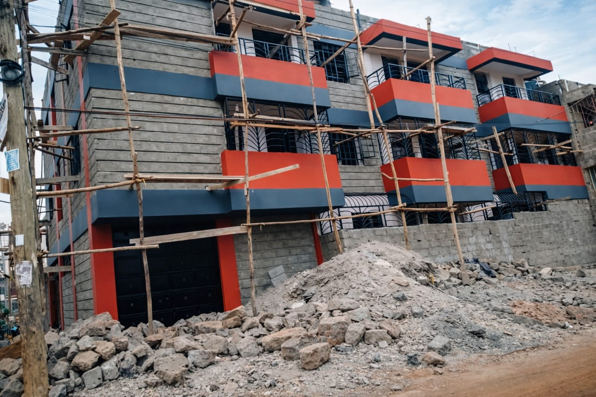
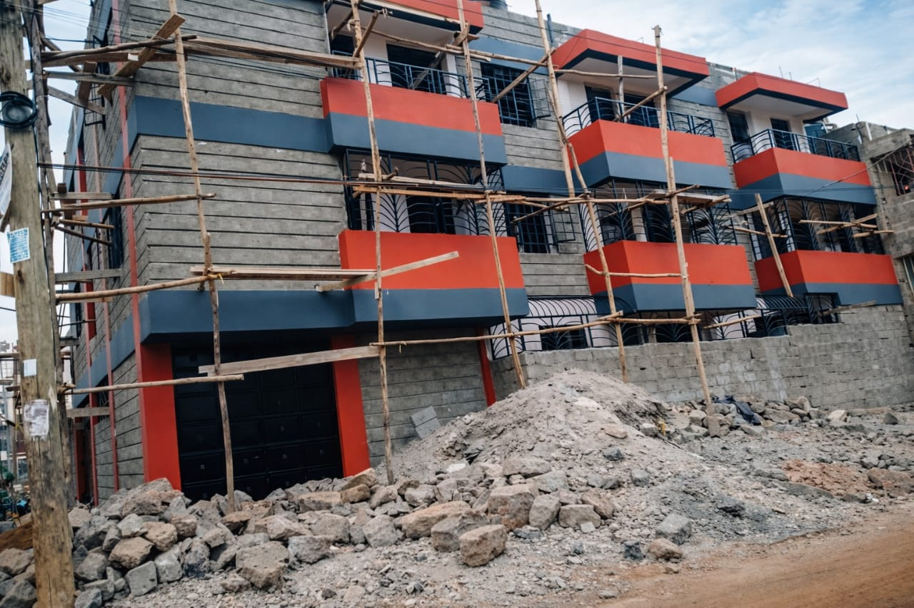

PROJECT ONE
Project Overview
This residential construction project focused on full site preparation and setting-out activities to ready the plot for foundation works. Key activities included clearing and grading the site, installing temporary erosion control, establishing survey control points and building lines, excavation for foundations, and provisional drainage routing. All works were carried out to the architectural and structural drawings with quality checks, safety supervision, and coordination of material deliveries to keep the program on schedule.
.jpeg)


PROJECT THREE
Project Overview
This apartment project captures the step-by-step transformation from groundwork to a fully structured multi-storey building. Each stage highlights precision in structural work, careful material use, and steady progress toward a durable, modern residential development designed for long-term occupancy.


 

PROJECT FOUR
Project Overview
This maisonette project demonstrates a carefully executed construction process from accurate foundation setting to the advanced roofing stage. The project emphasizes structural integrity, proper load distribution, and quality workmanship at every phase. From the initial groundwork to the installation of the roof structure, each stage was carried out to ensure durability, safety, and long-term residential comfort. The design supports a spacious two-level layout while maintaining strong structural performance and aesthetic appeal.